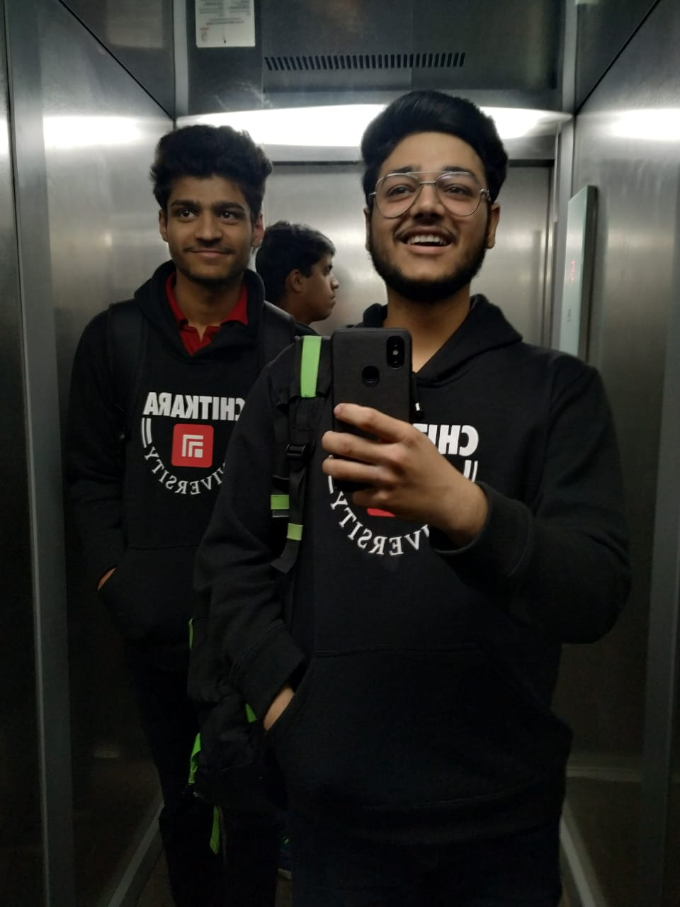

Nice to meet u,We'r Chetan Batra & Ujjawal Joshi
We believe when you travel, there’s no better way to connect with people, than through food.No matter what culture or country you’re from, or wherever you choose to travel, the one thing you and I have in common is that food is a huge part of our lives.Foovels(foovels.com-We travel for food) is where people who travel for food learn about authentic local food from around the world (or at least from the destinations We’ve personally visited – We keep this blog very personal).
What is Foovels?
Foovel is made up of food & travel.We travel for food.Food and travel is our passion (and that’s what this blog is all about).Along with delicious and authentic food and restaurant recommendations, our goal are also to inspire you to get out of your comfort zone, set goals, and pursue what you’re most passionate about.
It was during that time, back in early 2018 when I decided to start a blog. With the help of about 10 cups of coffee per day, Foovels.com was born.

But during that year, I set a personal goal that I would never teach again, and that I would find a way to make a living on the internet, so I could travel (and eat) and earn money at the same time.
Every spare moment I would blog and sit glued in front of my laptop until my eyes went crazy.
At the beginning, when I made the decision to earn a living online, I’ll admit that I had to live on the cheap (really cheap).
But when you have a goal you’re working towards, you’ll do what it takes to get there.
Since I started blogging, I’ve loved taking photos (here’s the camera I use now). But it was sometime randomly in 2019 when I said to myself, “photographs of food are great, but how can I share more of the atmosphere and the emotion of eating?”